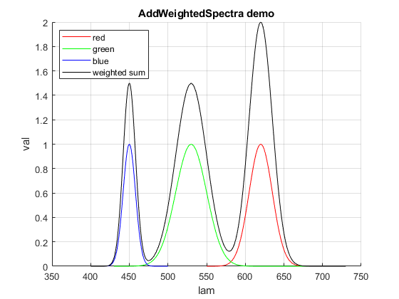

JMO Spectrum Library
Navigate to: Alphabetic list | Grouped list
Version 2.1, August 21, 2021
Julius Muschaweck, JMO GmbH, Zugspitzstr. 66, 82131 Gauting, Germany email: julius@jmoptics.de web: https://www.jmoptics.de
Contents
Rationale
We deal routinely with spectra in illumination optics. We need to analyze LED spectra, compute color coordinates and color rendering values from spectra, integrate them, add spectra, multiply spectra with scalar weights and with other spectra (like transmission spectra), interpolate a given measured spectrum with non-equidistant wavelength values to a regular 1 nm array, and so on.
In practice, this is tedious: spectra come in various formats, and the problem of dealing with two spectra als tabulated values which have two different sets of wavelengths is annoying. In addition, many colorimetric calculations, from computing simple x/y coordinates all the way to the color rendering index, are not easily accessable. This open source Matlab library is designed to make these engineering tasks easy and transparent. Many routines are compatible with GNU Octave, and with Matlab for Mac and Linux.
For details on design decisions and code conventions, see design decisions.
License -- Public Domain
I release this software into the public domain under CC0
Detailed documentation
For details, see the alphabetic list of functions, and the grouped list.
Getting Started
Let's create a very simple spectrum: CIE standard illuminant E, which is just a flat spectrum from 360 nm to 830 nm. By definition it should have equal X,Y,Z tristimulus values and x-y color coordinates of [1/3, 1/3].
s.lam = [360 830];
s.val = [1 1];
s
xyz = CIE1931_XYZ(s)
s.xyz = xyz; % A common pattern: Compute some property of a spectrum, then add it as a field
s =
struct with fields:
lam: [360 830]
val: [1 1]
name: "CIE standard illuminant E"
hopp: "topp"
xyz =
struct with fields:
X: 106.8654
Y: 106.8569
Z: 106.8919
cw: 320.6143
x: 0.3333
y: 0.3333
z: 0.3334
Now, let's create three Gaussian spectra, and compute the result of additive color mixing with some weights to generate some kind of white, using AddWeightedSpectra. Then, we compute a whole lot of colorimetric values for this spectrum with ComputeSpectrumColorimetry.
red = GaussSpectrum(linspace(550,700),620,15);
green = GaussSpectrum(linspace(430,730),530,20);
blue = GaussSpectrum(linspace(400,500),450,8);
sumspec = AddWeightedSpectra({red, green, blue},[2, 1.5, 1.5]);
figure();
clf;
hold on;
plot(red.lam, red.val,'r');
plot(green.lam, green.val,'g');
plot(blue.lam, blue.val,'b');
plot(sumspec.lam, sumspec.val,'k');
legend({'red','green','blue','weighted sum'},'Location','NorthWest');
grid on;
xlabel('lam');
ylabel('val');
title('AddWeightedSpectra demo');%
ComputeSpectrumColorimetry(sumspec)
%%%%%%%%%%%%%%%%%%%%%%%%%%%%%%%%%%%%%%%%%%%%%%%%%%%%%%%%%%%%%%%%%%%%%%%%%%%%%%
%
ans =
struct with fields:
lam: [300×1 double]
val: [300×1 double]
XYZ: [1×1 struct]
x: 0.3699
y: 0.3801
u: 0.2169
v: 0.3343
up: 0.2169
vp: 0.5015
CCT: 4.3169e+03
dist_uv_Planck: 0.0048
CRI_all: [1×1 struct]
Ra: 68.4069
Ldom: 575.0653
purity: 0.2508
